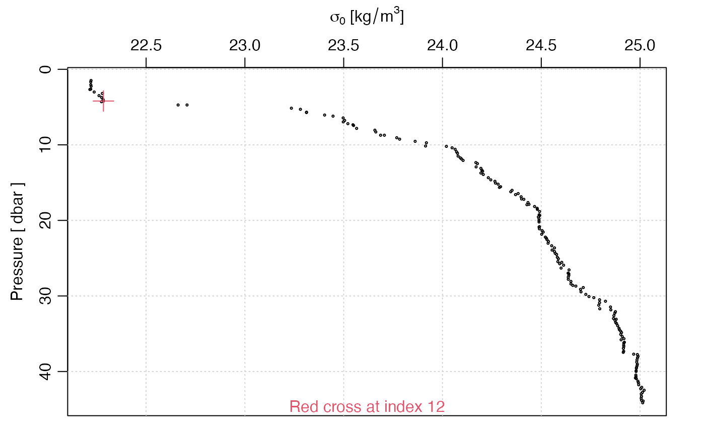

vignettes/ctd_tag.Rmd
ctd_tag.RmdAbstract. This vignette shows how to use low-level
ocetag functions to set up a tagging database, how to add
entries to it, and how to recover entries.
First, read a CTD file and plot a density profile. You may ignore the
warnings, one of which indicates that the file has an erroneous
start-time, the other of which indicates that the file provides
temperature on an archaic scale, which gets auto-converted by
read.oce().
In the plot, you may notice evidence of a mixed layer within the top
10m of the water column. The code block below is written so that
locator() will be called if you run it interactively and
otherwise, as in the building of this vignette, the result is inserted
directly. Note that the ctdtag() function provides better
ways to indicate such points, but the purpose here is to show how to use
the low-level functions.
library(ocetag)
#> Loading required package: shiny
#> Loading required package: oce
#> Loading required package: gsw
#> Loading required package: RSQLite
library(oce)
name <- "ctd.cnv"
f <- system.file("extdata", name, package = "ocetag")
d <- oce::read.oce(f)
#> Warning in read.ctd.sbe(file, encoding = encoding, processingLog =
#> processingLog, : startTime (1903-10-15 11:38:38) is < 1950, suggesting a
#> turn-of-the-century problem in this cnv file
#> Warning in read.ctd.sbe(file, encoding = encoding, processingLog =
#> processingLog, : this CNV file has temperature in the IPTS-68 scale, and this
#> is stored in object, but note that [["temperature"]] and the sw* functions
#> convert the numbers to ITS-90 values
plotProfile(d, xtype = "sigma0", type = "p", cex = 0.3)
# Change next to TRUE for interactive work
if (FALSE) {
xy <- locator(1)
usr <- par("usr")
dx <- (xy$x - d[["sigma0"]]) / (usr[2] - usr[1])
dy <- (xy$y - d[["pressure"]]) / (usr[4] - usr[3])
index <- which.min(dx^2 + dy^2)
} else {
index <- 12
}
points(d[["sigma0"]][index], d[["pressure"]][index], pch = 3, col = 2, cex = 2)
mtext(sprintf("Red cross at index %d", index), side = 1, col = 2, line = -1)
Now, we know the point to tag, and the next step is to tag it. First, we create a database. (To satisfy rules of CRAN packages, here we are creating a temporary file and then removing it. In actual use, of course we would name a particular file, and we would not erase it!)
# Define the list of tags, here just one, for mixed-layer depth.
mapping <- list("MLD" = 1)
# Add 'pressure' to the columns in the default 'tags' table.
tags <- list("pressure" = "FLOAT")We now have what we need to for the database work. First, we create
the database. (NB. if createDatabase() is called again with
the same database name, it will leave the file as it is.)
dbname <- "tags.db"
createDatabase(dbname, mapping = mapping, tags = tags)Saving the tag is simple. Note that the numeric value of the tag is saved, not the string value.
saveTag(name,
index = index, pressure = d[["pressure"]][index],
tag = 1, analyst = "Dan Kelley", dbname = dbname, debug=3
)
#> before adding ..., df is as follows
#> file index tag analyst analysisTime
#> 1 ctd.cnv 12 1 Dan Kelley 2024-04-20 19:52:47
#> after possibly adding ..., df is as follows
#> file index tag analyst analysisTime pressure
#> 1 ctd.cnv 12 1 Dan Kelley 2024-04-20 19:52:47 4.197Reading the tags later is also simple.
print(getTags(name, dbname = dbname))
#> file index pressure tag analyst analysisTime
#> 1 ctd.cnv 12 4.197 1 Dan Kelley 1713653567For readers who are familiar with SQL syntax, note that typing
echo .dump | sqlite3 dbnamein a unix terminal yields as follows.
PRAGMA foreign_keys=OFF;
BEGIN TRANSACTION;
CREATE TABLE `version` (
`version` INTEGER
);
INSERT INTO version VALUES(2);
CREATE TABLE `mapping` (
`value` INTEGER,
`name` TEXT
);
INSERT INTO mapping VALUES(1,'MLD');
CREATE TABLE `tags` (
`file` TEXT,
`index` INT,
`pressure` FLOAT,
`tag` INT,
`analyst` TEXT,
`analysisTime` TIMESTAMP
);
INSERT INTO tags VALUES('ctd.cnv',12,4.197000000000000063,1,'Dan Kelley',1713631216);
COMMIT;